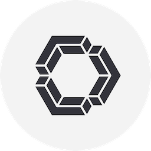

Continue
CódigoAssistente de programação que pode conectar modelos locais. Provedores externos podem cobrar pelo uso.
Condições e fonte
Código aberto · Modelo à parte. Confira as regras, cotas e condições no provedor.
Consultar fonte oficial ↗